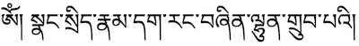

Tibetan fonts
Contents
Tibetan fonts#
Tibetan fonts are difficult to produce due to the unlimited number of possible glyphs. While there are only a well defined set of ‘standard’ Tibetan syllables, there exists many extensions because of Sanskrit transliterations (e.g. mantras), Chinese transliterations, and Dzongkha shortcuts. Due to all of those extensions, it is virtually impossible to generate a ‘complete’ Tibetan font by providing all possible glyphs.
Microsoft had develop a system that could dynamically render new glyph variants, but the resulting Himalaya font doesn’t work on non-Windows platforms and lacks the esthetics of preconceived glyphs.
So Tibetan fonts either look artificial or are incomplete…
For more information about the history and development of the Tibetan scripts, see History of Tibetan script.
Using fonts with an open license is important#
If you are working on Tibetan projects that involve Sanskrit stacks (mantras), Chinese transliterations or Dzongkha shortcuts, then there will be the situation that a given font doesn’t correctly render a stack that is needed. In such a situation, it is possible to extend a given font by providing additional glyphs for such a special case. See Tibetan font creation for details.
If the font you are using is not under a free license, then you won’t be able to distribute any changes that you have made to a font to add needed glyphs.
Recommendation#
The Noto and Babelstone families of fonts are currently under activate development, so updates, improvements and bug-fixes are more likely.
Overview of freely available Unicode Tibetan fonts#
The following list contains a number of fonts with good coverage of the most common glyphs and open licenses.
Font name |
Sample |
Glyphs |
Comment |
|---|---|---|---|
|
5110 |
Version 1.901 2007 (beta for v 2.00), one of the first Unicode fonts |
|
3193 |
Version 1.000 preliminary, Chris Fynn’s font |
||
3333 |
Version 1.000, Chris Fynn’s font |
||
|
4019 |
Version 10.008 April 21, 2022, extended version of Jomolhari |
|
4019 |
Version 10.008 April 21, 2022, extended version of Jomolhari, slim |
||
 |
1891 |
Google’s Noto font, with many different weights. Linked Release version 2.001 (2022) has bugs, see comment1 for a solution. |
|
Noto Sans Tibetan |
|
1296 |
Subset based on outdated version of Google’s Serif Tibetan, do not use. |


Text samples#
Longer text samples, created with Scribus.
Samples |
|
|---|---|
Qomolangma Tibetan Unicode Fonts#
These fonts are free for non-commercial use only.
Download the Qomolangma collection here. (at Yalasoo font page)
Uchen fonts#
Font name |
Sample |
Glyphs |
Comment |
|---|---|---|---|
Qomolangma-Subtitle |
1561 |
Version 1.00, 2013, China Tibetology Research Center, Tashi Tsering and Wangdra Gyab |
|
Qomolangma-Title |
1561 |
Version 1.00, 2013, China Tibetology Research Center, Tashi Tsering and Wangdra Gyab |
|
Qomolangma-Uchen Sarchen |
1563 |
Version 2.00, 2008, China Tibetology Research Center, Tashi Tsering and Wangdra Gyab |
|
Qomolangma-Uchen Sarchung |
1563 |
Version 2.00, 2008, China Tibetology Research Center, Tashi Tsering and Wangdra Gyab |
|
Qomolangma-Uchen Suring |
1564 |
Version 2.00, 2009, China Tibetology Research Center, Tashi Tsering and Wangdra Gyab |
|
Qomolangma-Uchen Sutung |
1477 |
Version 2.00, 2008, China Tibetology Research Center, Tashi Tsering and Wangdra Gyab |
Artistic variations#
Font name |
Sample |
Glyphs |
Comment |
|---|---|---|---|
Qomolangma-Art |
1562 |
Version 1.00 June 18, 2014, China Tibetology Research Center, Tashi Tsering and Wangdra Gyab |
|
Qomolangma-Dunhang |
1562 |
Version 1.00, 2015, China Tibetology Research Center, Tashi Tsering and Wangdra Gyab |
|
Qomolangma-Woodblock |
1561 |
Version 2.00, 2014, China Tibetology Research Center, Tashi Tsering and Wangdra Gyab |
Cursive variants#
See Tibetan calligraphy.
Font name |
Sample |
Glyphs |
Comment |
|---|---|---|---|
Qomolangma-Betsu |
1404 |
|
|
Qomolangma-Drutsa |
1415 |
|
|
Qomolangma-Chuyig |
1655 |
Version 2.00, 2009, China Tibetology Research Center, Tashi Tsering and Wangdra Gyab |
|
Qomolangma-Tsumachu |
1526 |
Version 2.00, 2008, China Tibetology Research Center, Tashi Tsering and Wangdra Gyab |
|
Qomolangma-Tsutong |
1562 |
Version 2.00, 2008, China Tibetology Research Center, Tashi Tsering and Wangdra Gyab |
|
Qomolangma-Edict |
1562 |
Version 1.00, 2013, China Tibetology Research Center, Tashi Tsering and Wangdra Gyab |
|
Qomolangma-Tsuring |
1562 |
Version 2.00, 2008, China Tibetology Research Center, Tashi Tsering and Wangdra Gyab |
Mongolian, 'phags-pa (Tibetan variant)#
Qomolangma-horyig |
||
|---|---|---|
Qomolangma-horyig |
|

{kind=link}
See also: 'Phags-pa Wikipedia
OS-specific fonts#
Remarks and History#
For more information about the history and development of the Tibetan scripts, see History of Tibetan script.
Chris Fynn was one of the first Unicode font pioneers. His fonts Jomolhari and DDC Uchen, available with free Open SIL licenses, where the basis of many developments.
The Babelstone Project by Andrew West has continued the work on Jomolhari and updated the font to newer Unicode standards and extended the glyph coverage.
The Tibetan & Himalayan Library at Virginia University had bought the rights on the proprietary Tibetan Machine font with help of the Trace Foundation and made it freely available as one of the first Unicode fonts.
Google’s Noto font family provides Tibetan support and free support for virtually every language on earth for a large number of platforms.
The Qomolangma font project at Yalasoo, created with support by the Central Tibetan Relief Committee, CTRC.
Pre-Unicode fonts#
Old digital Tibetan files often use ancient pre-Unicode fonts. The following list contains the most frequent types. All of those fonts use their own proprietary encoding, check Conversion of old Tibetan text for information on how to convert old documents to modern Unicode.
TibetanMachine (free download: pktc.org) and TibetanCaligraphic, TibetanClassic, DzongkhaCaligraphic (commercial fonts: www.pktc.org)
TibetanMachineWeb (free download: www.pktc.org)
Tibetan Modern A (free download: virginia.edu.)
Robillard (Ltibetan, etc) (free download: UDP website).
Sambhota including Dedris, Eedris, Esama/b/c, Sama/b/c, Samw (was a free download if only used to view ACIP documents, otherwise commercial license required, see updated at: nitartha.net.)
TIBETBT (free download via THDL
fonts derived from the “P.R.C. National Standard for Tibetan (Extension A)” (aka “Set A”). For a documentation see Chris Fynn’s website: Tibetan Extension A. Chris Fynn’s Jomolhari supports this standard.
TCRC Bod-Yig, TCRC Youtsoweb, TCRC Youtso (free download: www.tchrd.org
External sources#
- 1
Current (2022-06) release-version of
Noto Serif Tibetan, version 2.001, renders the glyph དྡྷི incorrectly. A fix is available at noto development repository. See discussion at bug report.- 2
- 3